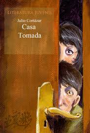
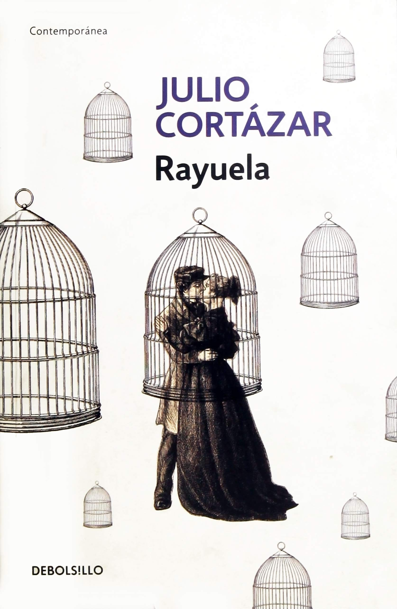

Julio Cortázar

Julio Cortázar (1914–1984) fue un escritor y traductor argentino, figura clave del boom latinoamericano. Su obra combina realismo y fantasía, explorando la cotidianeidad con giros inesperados y juegos narrativos.
Nacido en Bruselas y criado en Argentina, estudió literatura en la Universidad de Cuyo. Vivió gran parte de su vida en París, donde tradujo a autores como Edgar Allan Poe y Jacques Prévert.
Su estilo innovador rompe con la narrativa tradicional: cuentos como La casa tomada y novelas como Rayuela invitan al lector a participar activamente de la historia.
OBRAS IMPORTANTES


